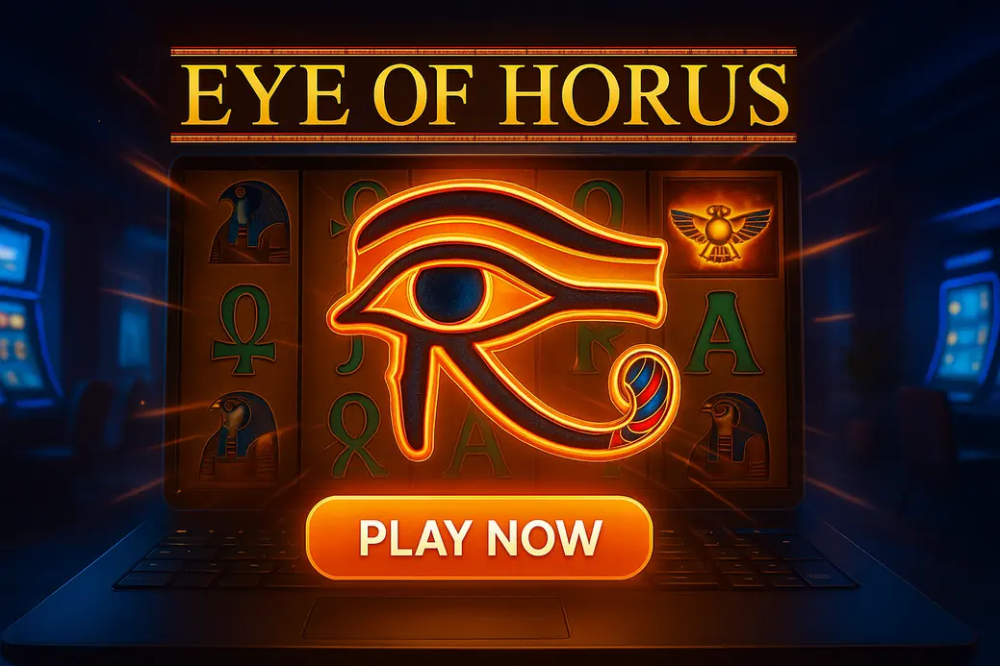

<style>
  body{font-family:Arial,Helvetica,sans-serif;line-height:1.62;color:#1b1f24;background:#fff;margin:0;padding:0}
  article{max-width:980px;margin:0 auto;padding:22px 16px 0}
  h1{font-size:2.1rem;line-height:1.15;margin:14px 0 8px;color:#111827}
  h2{font-size:1.55rem;margin:34px 0 14px;color:#111827}
  h3{font-size:1.18rem;margin:22px 0 10px;color:#111827}
  p{margin:0 0 15px}
  a{color:#b91c1c;text-decoration:none;font-weight:700}
  a:hover{text-decoration:underline}
  .lead{font-size:1.08rem;color:#374151}
  .soft-card{background:#f9fafb;border:1px solid #e5e7eb;border-radius:16px;padding:18px;margin:18px 0}
  .fact-grid{display:grid;grid-template-columns:repeat(3,1fr);gap:12px;margin:18px 0}
  .fact{background:#fff;border:1px solid #e5e7eb;border-radius:14px;padding:13px}
  .fact strong{display:block;color:#111827;margin-bottom:4px}
  .cta-wrap{background:#fff7f7;border:1px solid #fecaca;border-radius:18px;padding:16px;margin:16px 0 22px}
  .cta-title{font-weight:800;color:#111827;margin:0 0 12px;font-size:1.05rem}
  .product-grid{display:grid;grid-template-columns:repeat(5,1fr);gap:10px}
  .product-card{background:#fff;border:1px solid #e5e7eb;border-radius:14px;padding:12px;display:flex;flex-direction:column;gap:8px;min-width:0}
  .product-card strong{font-size:1.02rem;color:#111827}
  .offer{font-size:.9rem;color:#374151;font-weight:700}
  .product-card ul{margin:0;padding-left:17px;font-size:.86rem;color:#4b5563}
  .play-btn{display:block;text-align:center;background:#dc2626;color:#fff!important;border-radius:10px;padding:10px 12px;font-weight:800;text-decoration:none;margin-top:auto}
  .play-btn:hover{background:#b91c1c;text-decoration:none}
  .pros-cons{display:grid;grid-template-columns:1fr 1fr;gap:14px;margin:18px 0}
  .pros,.cons{border-radius:16px;padding:16px;border:1px solid #e5e7eb}
  .pros{background:#f0fdf4}
  .cons{background:#fff7ed}
  .pros ul,.cons ul{margin:0;padding-left:20px}
  .note{background:#eff6ff;border-left:4px solid #2563eb;padding:14px 15px;border-radius:12px;margin:18px 0;color:#1f2937}
  .mini-compare{display:grid;grid-template-columns:repeat(3,1fr);gap:12px;margin:16px 0}
  .mini{background:#ffffff;border:1px solid #e5e7eb;border-radius:14px;padding:13px}
  .mini strong{display:block;margin-bottom:5px}
  .payment-list{display:flex;flex-wrap:wrap;gap:8px;margin:10px 0 18px}
  .payment-list span{background:#f3f4f6;border:1px solid #e5e7eb;border-radius:999px;padding:7px 10px;font-size:.92rem}
  .internal-links{background:#f9fafb;border:1px solid #e5e7eb;border-radius:16px;padding:16px;margin:28px 0 18px}
  .internal-links h3{margin-top:0}
  .internal-links ul{margin:0;padding-left:20px}
  @media(max-width:900px){
    .product-grid{grid-template-columns:repeat(2,1fr)}
    .fact-grid,.mini-compare{grid-template-columns:1fr}
  }
  @media(max-width:560px){
    article{padding:18px 14px 0}
    h1{font-size:1.75rem}
    h2{font-size:1.35rem}
    .product-grid,.pros-cons{grid-template-columns:1fr}
    .product-card{padding:13px}
    .play-btn{padding:12px}
  }
</style>

<article>
  <h1>About Us Eye Of Horus</h1>
<a href="#"></a>
  <p style="font-size:0.85em; color:#666;">Last Updated: 1 October 2026 | Verified by iGaming experts</p><br>

  <p class="lead">Welcome to our About us page for <strong>Eye Of Horus</strong>, the ancient Egypt slot that still gets UK players clicking because it is simple, quick, and oddly hypnotic. Honestly, it is not the flashiest game in the lobby, but the clean reels, expanding symbols and steady mobile rhythm make it feel better than half the overcooked slots released today.</p><br>

  <p>The short version: Eye of Horus is a five-reel, ten-payline video slot from Blueprint Gaming, based on the Merkur classic. It runs with an RTP of <strong>95.02%</strong> in its common UK-facing version, medium volatility, and a max win of <strong>500x stake</strong>. That cap will not make bonus hunters faint with excitement, but the game is easy to understand after three spins, and that matters.</p><br>

  <h2>About Eye Of Horus</h2>

  <div class="cta-wrap">
    <p class="cta-title">Recommended places to play Eye Of Horus-style slots</p><br>
    <div class="product-grid">
      <div class="product-card">
        <strong>DonBet</strong>
        <div class="offer">Welcome offer for casino players</div>
        <ul>
          <li>Clean slot lobby</li>
          <li>Good search filters</li>
          <li>Bonus terms need reading</li>
        </ul>
        <a class="play-btn" href="#">Play Now</a>
      </div>
      <div class="product-card">
        <strong>MyStake</strong>
        <div class="offer">Casino bonus and crypto options</div>
        <ul>
          <li>Fast site on mobile</li>
          <li>₿ Bitcoin support</li>
          <li>Wagering can be punchy</li>
        </ul>
        <a class="play-btn" href="#">Play Now</a>
      </div>
      <div class="product-card">
        <strong>GoldenBet</strong>
        <div class="offer">Casino promotions for slot fans</div>
        <ul>
          <li>Simple layout</li>
          <li>Live casino included</li>
          <li>Smaller niche game range</li>
        </ul>
        <a class="play-btn" href="#">Play Now</a>
      </div>
      <div class="product-card">
        <strong>VeloBet</strong>
        <div class="offer">Sports and casino welcome package</div>
        <ul>
          <li>Quick registration</li>
          <li>Decent provider mix</li>
          <li>Bonus pages feel busy</li>
        </ul>
        <a class="play-btn" href="#">Play Now</a>
      </div>
      <div class="product-card">
        <strong>Rolletto</strong>
        <div class="offer">Casino rewards and ongoing promos</div>
        <ul>
          <li>Huge game catalogue</li>
          <li>Crypto-friendly cashier</li>
          <li>Menus take learning</li>
        </ul>
        <a class="play-btn" href="#">Play Now</a>
      </div>
    </div>
  </div>

  <p>Eye of Horus is built for players who want a clean, old-school slot without a million side bets shouting at them. You get ten fixed paylines, scarab wilds, pharaoh symbols, ankhs, card royals, and a free spins round where one symbol expands to fill reels 2, 3 and 4 when it lands. No cluster wins. No cascading nonsense. No feature buy button begging for your rent money.</p><br>

  <p>That simplicity is its biggest strength. The spin button responds instantly, the reels settle quickly, and on mobile the game does not feel like it is dragging a suitcase through mud. The downside is obvious too: if you like giant bonus mechanics like <strong>Big Bass Bonanza</strong> from Pragmatic Play, Eye of Horus feels restrained. Big Bass has a bigger personality and collector drama, but it also has colder dead patches and a more teasing bonus rhythm. Eye of Horus is calmer, for better and worse.</p><br>

  <div class="fact-grid">
    <div class="fact">
      <strong>Provider</strong>
      Blueprint Gaming / Merkur-inspired classic
    </div>
    <div class="fact">
      <strong>RTP</strong>
      95.02% on the widely used version
    </div>
    <div class="fact">
      <strong>Volatility</strong>
      Medium, with plenty of small base-game hits
    </div>
  </div>

  <h2>How Eye Of Horus Plays</h2>

  <p>Eye of Horus plays at a lovely pace. Ten paylines means the screen is not cluttered, and the base game gives you enough tiny returns to keep the session moving. It is not a slot where every spin feels dead. You will see 2x, 4x and 8x stake returns often enough, but the bloody challenge is building anything meaningful before the balance gets nibbled down.</p><br>

  <p>The wild scarab substitutes for all regular symbols and helps complete wins from left to right. It does not expand in the base game, which is a small disappointment when you land it stacked-looking on reel three and realise it is just sitting there. The real energy comes from the bonus, where the chosen expanding symbol can turn an average free spins round into something tidy.</p><br>

  <div class="soft-card">
    <h3>Gameplay feel</h3>
    <p>On desktop, the game feels crisp and uncluttered. On a phone, the portrait layout is genuinely playable because the reels stay readable and the stake controls do not fight your thumb. By the way, the spin button is a menace on mobile if you rest your hand too close to the lower-right corner; it is responsive enough to catch lazy taps.</p><br>
  </div>

  <p>Compared with <strong>Book of Dead</strong> by Play’n GO, Eye of Horus feels softer and less brutal. Book of Dead offers a far higher max win and that famous expanding symbol bonus, but the base game can feel like a desert march with no water. Eye of Horus gives more frequent little bumps, yet it lacks the same explosive ceiling. That trade-off defines the whole game.</p><br>

  <h2>Eye Of Horus Features</h2>

  <p>The feature list is short, but it is not empty. Eye of Horus leans on clarity rather than novelty, and that is why players still search for it in busy casinos where newer releases drown the lobby. The search bar actually works on several modern casino sites; type “Horus” and you get the game instead of scrolling through fifty Egyptian reskins. Small detail, big quality-of-life win.</p><br>

  <div class="pros-cons">
    <div class="pros">
      <h3>What works</h3>
      <ul>
        <li>Simple ten-line setup, easy for beginners.</li>
        <li>Free spins can create strong mid-sized wins.</li>
        <li>Fast loading on iPhone and Android browsers.</li>
        <li>Lower-pressure feel than high-volatility bonus-buy slots.</li>
      </ul>
    </div>
    <div class="cons">
      <h3>What grates</h3>
      <ul>
        <li>95.02% RTP is below many modern online slots.</li>
        <li>500x max win limits the dream factor.</li>
        <li>No gamble feature on many versions.</li>
        <li>Base game can grind if scatters refuse to land.</li>
      </ul>
    </div>
  </div>

  <p>The key symbols are easy to follow. The Pharaoh pays best among the standard symbols, then the Eye, birds, cats and card royals step down in value. Scatter symbols trigger the bonus when three or more land anywhere on the reels. It is all very “does what it says on the tin”, which is refreshing when some slots need a damn flowchart.</p><br>

  <h2>Free Spins and Expanding Symbols</h2>

  <p>Land three scatter symbols and you trigger the free spins round. Before the spins start, the slot selects a special expanding symbol. During the feature, whenever that symbol appears on reels 2, 3 or 4, it expands to cover the full reel after wins are counted. That order matters. You need the symbol to connect across active paylines, not just look pretty in the middle of the screen.</p><br>

  <p>The feature feels tense because the chosen symbol changes the whole mood. If you get a high-paying Pharaoh or Eye, every spin carries proper anticipation. If you get a low card symbol, the round can still pay, but it feels flatter. No bollocks: low-symbol bonuses are part of the deal, and they are why Eye of Horus never feels as generous as its theme suggests.</p><br>

  <div class="note">
    <strong>Practical tip:</strong> watch the selected expanding symbol before judging the bonus. A ten-spin round with a premium symbol has a very different ceiling from one where the ten is expanding. Same feature, different emotional damage.
  </div>

  <p>The rhythm is smoother than <strong>Legacy of Dead</strong>, another Play’n GO Egyptian-style slot with expanding symbols. Legacy of Dead has a stronger max-win chase and more modern polish, but it is harsher when it blanks. Eye of Horus is less dramatic, yet it gives a more relaxed session if you are spinning while watching football or sitting on the train.</p><br>

  <h2>RTP, Volatility and Real Session Feel</h2>

  <p>The standard Eye of Horus RTP sits at <strong>95.02%</strong>, which is not elite. Plenty of modern slots run at 96% or higher, including NetEnt’s <strong>Starburst</strong> at 96.09%. Starburst is smoother and more iconic, but its low-volatility style can feel repetitive fast, and it lacks a proper free spins round. Eye of Horus at least gives you that feature chase.</p><br>

  <p>Volatility is medium. In plain English, your balance does not vanish as violently as it can on high-volatility games, but the max payout is capped enough that you should not expect monster screenshots. A realistic £20 session at 20p per spin gives you 100 spins before wins are counted. You will often stretch beyond that if the base game chips in, but a scatter drought still hurts.</p><br>

  <div style="overflow-x: auto; -webkit-overflow-scrolling: touch;">
    <table style="width:100%;border-collapse:collapse;margin:18px 0;border:1px solid #e5e7eb;border-radius:14px;overflow:hidden">
      <thead>
        <tr style="background:#f3f4f6">
          <th style="text-align:left;padding:11px;border-bottom:1px solid #e5e7eb">Detail</th>
          <th style="text-align:left;padding:11px;border-bottom:1px solid #e5e7eb">Eye Of Horus</th>
          <th style="text-align:left;padding:11px;border-bottom:1px solid #e5e7eb">Player takeaway</th>
        </tr>
      </thead>
      <tbody>
        <tr>
          <td style="padding:11px;border-bottom:1px solid #e5e7eb">RTP</td>
          <td style="padding:11px;border-bottom:1px solid #e5e7eb">95.02%</td>
          <td style="padding:11px;border-bottom:1px solid #e5e7eb">Playable, but not best-in-class.</td>
        </tr>
        <tr>
          <td style="padding:11px;border-bottom:1px solid #e5e7eb">Max win</td>
          <td style="padding:11px;border-bottom:1px solid #e5e7eb">500x</td>
          <td style="padding:11px;border-bottom:1px solid #e5e7eb">Fine for casual play, weak for hunters.</td>
        </tr>
        <tr>
          <td style="padding:11px">Volatility</td>
          <td style="padding:11px">Medium</td>
          <td style="padding:11px">Good balance of hits and feature chase.</td>
        </tr>
      </tbody>
    </table>
  </div>

  <p>Payment support depends on the casino, not the slot. The better sites keep the cashier compact and quick: <span aria-label="payment methods">💳 Debit Card, 🏦 Bank Transfer, 📱 Apple Pay, ₿ Bitcoin, ₮ Tether</span>. MyStake and Rolletto stand out for crypto options, though the trade-off is that bonus terms can feel more layered than a standard UKGC casino. One real-world detail: Bitcoin withdrawals on crypto-first casinos can land in under 6 hours when KYC is already done, but pending times still depend on the operator.</p><br>

  <h2>Mobile Experience</h2>

  <p>Eye of Horus is one of those slots that suits mobile because the game does not ask too much from the screen. Portrait mode works well. The reels remain readable, and the lower control bar keeps stake, autoplay and spin within thumb reach. That sounds basic, but plenty of slots still make the stake selector feel like picking a lock with wet fingers.</p><br>

  <p>On 4G, the first load can take a few seconds if the casino lobby is bloated with banners. Once the game is open, spins run smoothly because the animations are light. On Wi-Fi, it feels instant. The only irritation is that fast tapping can trigger spins before you have mentally registered the last result. Use turbo only if you are disciplined; otherwise your £10 test session turns into a “where did that go?” moment.</p><br>

  <div class="soft-card">
    <h3>Best mobile settings</h3>
    <ul>
      <li><strong>Use portrait mode</strong> for cleaner controls and less accidental menu tapping.</li>
      <li><strong>Set stake before autoplay</strong> because changing mid-flow is fiddly on smaller phones.</li>
      <li><strong>Keep sound low</strong>; the Egyptian jingle loops hard after ten minutes.</li>
    </ul>
  </div>

  <p>DonBet and GoldenBet tend to suit players who want a simpler casino interface, but neither has the same sprawling provider depth as Rolletto. VeloBet is handy if you split time between sports and slots, yet the casino promo pages can feel busy. None of these weaknesses ruin the experience; they just matter when you are trying to find Eye of Horus quickly without opening six tabs like a detective.</p><br>

  <h2>Variations and Similar Slots</h2>

  <p>Eye of Horus has inspired a lot of near-neighbours. Some use ancient Egypt artwork, others borrow the expanding symbol mechanic, and plenty do both. The trick is knowing what you want from the session. If you want comfort, Eye of Horus does the job. If you want huge potential, it is not the one. That 500x ceiling is the line in the sand.</p><br>

  <div class="soft-card">
    <p><strong>If you like this, try that:</strong></p><br>
    <div class="mini-compare">
      <div class="mini">
        <strong>Book of Dead</strong>
        Bigger 5,000x max win and classic expanding symbol bonus. Weakness: brutal base-game blanks.
      </div>
      <div class="mini">
        <strong>Legacy of Dead</strong>
        Slicker Egyptian feel with stronger potential. Weakness: less friendly to small casual balances.
      </div>
      <div class="mini">
        <strong>Eye of Horus Megaways</strong>
        More ways to win and a busier reel set. Weakness: loses the calm simplicity of the original.
      </div>
    </div>
  </div>

  <p><strong>Eye of Horus Megaways</strong> is worth mentioning because it takes the familiar theme and adds the Big Time Gaming-style dynamic reel engine. It has more movement and a higher-energy feel, but it is less tidy on mobile and less relaxing. The original Eye of Horus wins when you want low-friction spins. The Megaways version wins when you want chaos with scarabs on it.</p><br>

  <p>Another option is <strong>Rise of Olympus</strong> by Play’n GO, which swaps Egypt for Greek gods and uses cluster pays with charged character powers. It is more strategic-feeling and has a 96.5% RTP in its standard version, but the weakness is that the board can look busy to players who just want reels and paylines. Eye of Horus is far easier to read at a glance.</p><br>

  <h2>Bankroll Tips for Eye Of Horus</h2>

  <p>Keep your staking boring. That is the best advice. Eye of Horus looks gentle, but medium volatility still eats balances when the bonus does not arrive. A sensible plan is 100 to 150 spins per session. If your bankroll is £30, a 20p stake gives you room to breathe. Jumping to £1 spins because the first bonus paid 40x is how sessions go sideways.</p><br>

  <p>The game also tempts players to chase the expanding symbol feature after a bad bonus. Do not. A low-paying free spins round does not mean the next one is “due”. Slots do not care about fairness in the emotional sense; the maths resets every spin. That is annoying, but it is true.</p><br>

  <div class="note">
    <strong>Common mistakes:</strong>
    <ul style="margin:8px 0 0;padding-left:20px">
      <li>Raising stake straight after a weak low-symbol bonus.</li>
      <li>Using autoplay without a loss limit, especially on mobile.</li>
      <li>Expecting Book of Dead-sized wins from a 500x max-win slot.</li>
    </ul>
  </div>

  <p>Set a win stop as well as a loss stop. If you start with £25 and climb to £45, banking £20 is not cowardly; it is the whole point. Eye of Horus is good at giving back little chunks, then taking them again through quiet spells. Cashing out while ahead feels less exciting than pressing spin, but future-you will not call it bollocks.</p><br>

  <h2>Final Verdict</h2>

  <p>Eye of Horus remains popular because it respects your time. It loads fast, plays cleanly, and gives you a bonus round that makes sense without a tutorial. The expanding symbol feature is still satisfying when it lands right, especially with a premium symbol across the middle reels. For casual slot fans, that is enough.</p><br>

  <p>The weaknesses are clear: 95.02% RTP is not generous, the 500x cap limits serious upside, and the base game can feel plain next to modern releases. But not every slot needs fireworks, fish collectors or a bonus buy screaming in neon. Eye of Horus is a steady pint, not a flaming cocktail.</p><br>

  <p>If your aim is a relaxed mobile session with simple rules and familiar Egyptian styling, Eye of Horus deserves a place on your shortlist. If you are chasing life-changing multipliers, head toward higher-volatility games and accept the colder ride. Either way, treat this About us review as the straight answer: Eye of Horus is old-school, readable, and still surprisingly playable.</p><br>

  <div class="internal-links">
    <h3>Read also</h3>
    <ul>
      <li><a href="#">Best Egyptian-themed slots to play online</a></li>
      <li><a href="#">Eye Of Horus Megaways review and tips</a></li>
    </ul>
  </div>

  <h2>Safer Gambling</h2>

  <p>Gambling should stay entertainment, not a bill-paying plan. Set deposit limits before you play, avoid chasing losses, and step away if the session stops feeling fun. Eye of Horus can feel gentle, but real money still leaves your account one spin at a time.</p><br>

  <p>
    <a href="https://www.begambleaware.org/" rel="nofollow">BeGambleAware</a> |
    <a href="https://www.gamcare.org.uk/" rel="nofollow">GamCare</a> |
    <a href="https://www.gamblingcommission.gov.uk/" rel="nofollow">UKGC</a> |
    <a href="https://www.gamstop.co.uk/" rel="nofollow">GamStop</a>
  </p><br>
</article>